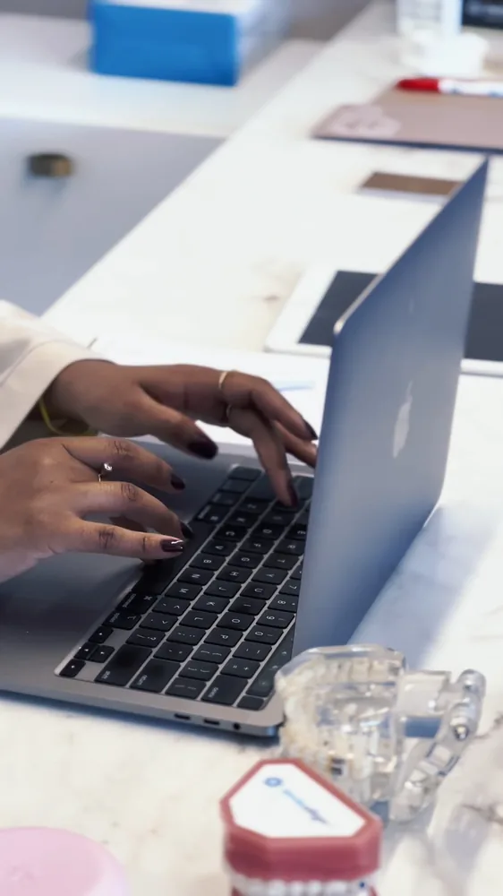
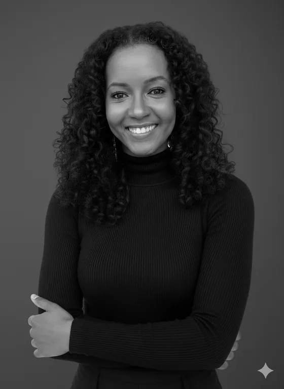
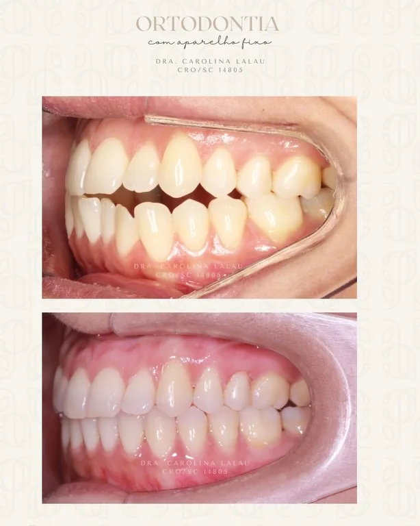
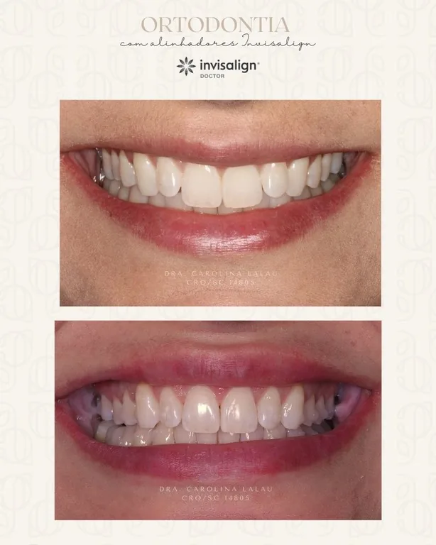
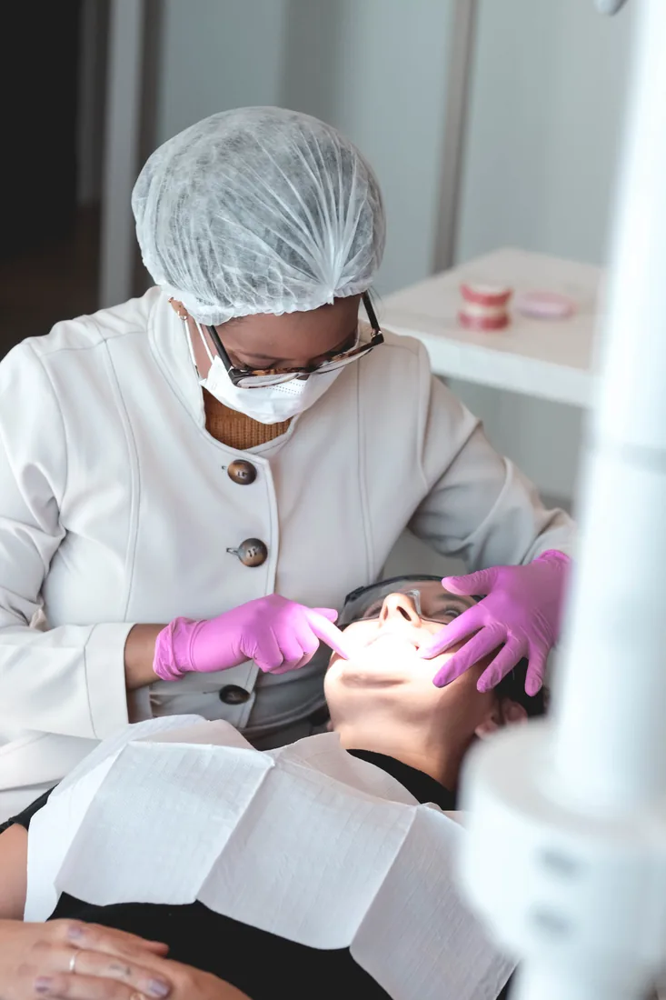
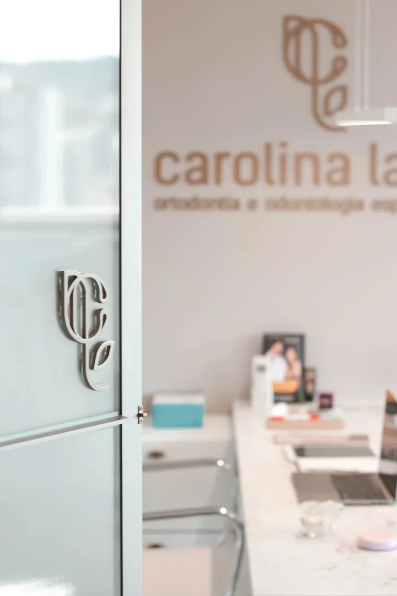
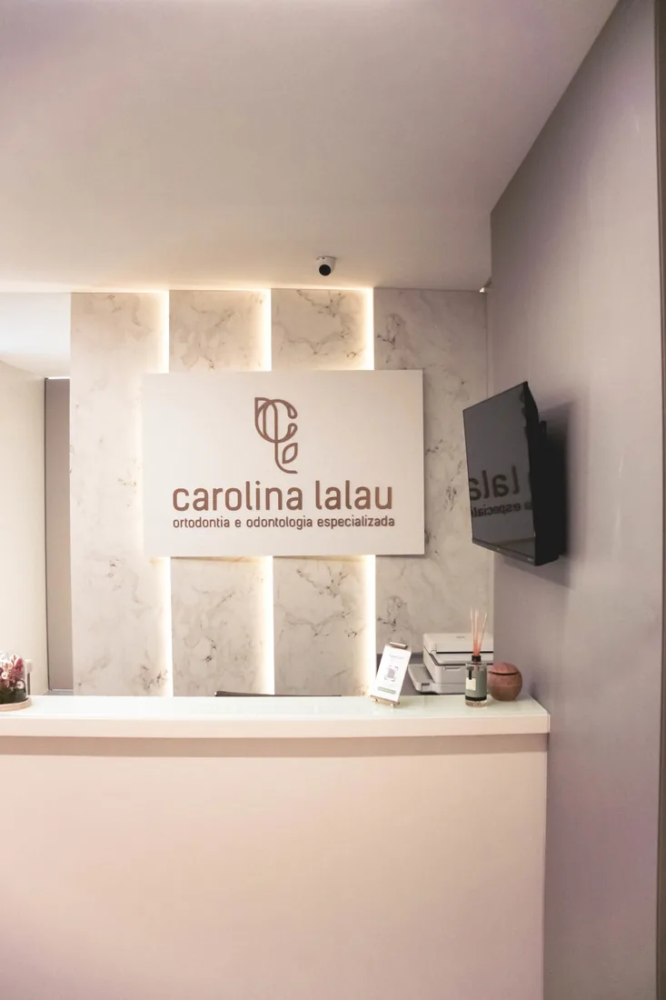
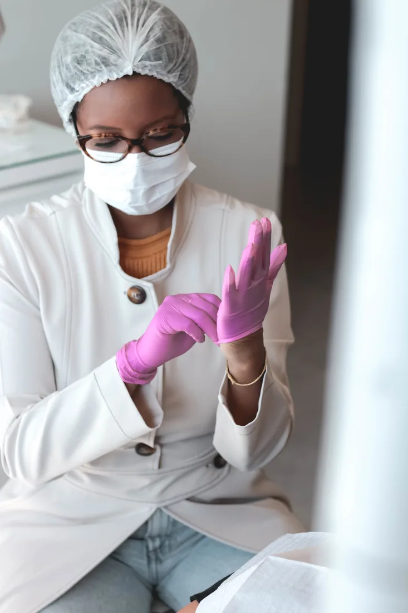

Dra. Carolina Lalau · Invisalign Doctor
Ortodontia com alinhadores Invisalign
Alinhadores transparentes e removíveis, planejados digitalmente para o seu sorriso. Também atendemos com aparelho fixo.
Alinhadores Invisalign, aparelho fixo e uma equipe de especialistas no mesmo consultório, no Centro de Criciúma.

Cada especialidade é atendida por um profissional dedicado. Escolha o tratamento e pré-agende em um minuto.

Alinhadores transparentes e removíveis, planejados digitalmente para o seu sorriso. Também atendemos com aparelho fixo.
Restaurações, profilaxia e clareamento dental.
Procedimentos para equilíbrio e harmonia do rosto.
Reposição de dentes com implantodontia.
Extração de terceiros molares com planejamento.
Endodontia para salvar o dente natural.
Reabilitação para devolver função e estética.
Conte o que está sentindo ou o que quer mudar, e a equipe indica o profissional certo.



Tratamentos realizados pela Dra. Carolina Lalau, CRO/SC 14805. Cada caso possui características únicas e o resultado não pode ser considerado padrão.


Um ambiente acolhedor no Edifício Metropolitan Business Center, no Centro de Criciúma, com todos os cuidados de biossegurança.
Diga o tratamento e a sua preferência de dia e horário. O pedido chega no WhatsApp do consultório e a equipe confirma com você.
Se não souber, escolha a avaliação: a equipe indica o profissional.
Atendemos de segunda a sexta.
PeríodoUsamos só para confirmar o seu horário.
Ao enviar, abre o WhatsApp com a mensagem pronta.
Isto é um pré-agendamento: o horário fica confirmado quando a equipe responder pelo WhatsApp.

Uma equipe multidisciplinar que olha o paciente como um todo — para resultados que duram mais.